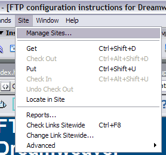
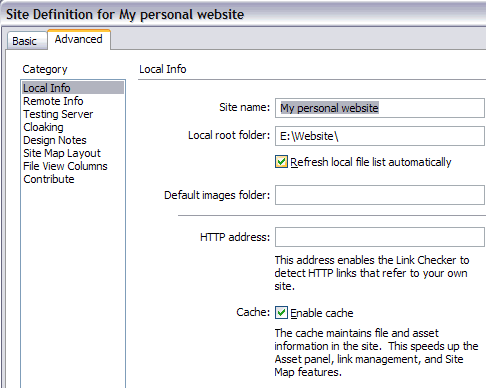
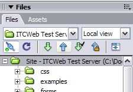

FTP Setup
This page has general information for installation or use of suggested ftp software. If you use a different program feel free to add notes to this page.
Fetch
Mac only
Drexel provides a copy of Fetch for students, available to download with your student account from the IRT Software page. Sign in with your Drexel id/password and navigate to the Mac OS software.
Download and install the app, and use the Serial Number provided in the text file by IRT to register your software.
Connect and Upload
- Open Fetch. It will prompt you to enter some login info.
- For Host, type your domain name. Also type in your username and password and click OK.
- Once you have logged in, open the public_html folder. To open it, double-click it.
- Once in the public_html folder, click Put Files.
- Select the file(s) you want to upload. Then click on Choose.
- Fetch will confirm the file name that will be uploaded and saved. Click OK to upload.
- When you look under public_html, you should see the newly uploaded file.
You can also drag/drop files to and from Fetch, like you would move files in your Finder.
Dreamweaver
Map your site in Dreamweaver
-

1. Go to the Site menu and click on Manage Sites
-

2. In the window that pops up, click on the New… button, and click on Site in the sub-menu that pops up
-

3. Go over to the Advanced tab in the new window.
4. Complete all the information on the Local Info option.- Enter a name into the Site name input box
- Enter the absolute path to the directory where the content is stored on your computer, locally. You can also use the folder icon next to the input box to browse to the directory
-

5. Go to the Remote Info option and fill out all the information
- At the Access drop down box, select FTP
- In the FTP Host text box, enter yourwebsite.com
- Enter the host directory (/public_html/)
- Enter your ftp username and password information
- Click the Test button to verify the information you entered is correct.
- IF you have trouble, try checking the Use Secure FTP (SFTP) check box
- Click the Ok button to exit the window and save the new site configuration.
-

6. Upload your files to the server
- Select the root folder in the Files sub-window
- Click the Put (the up arrow) button to upload the files to the server
- Enter your ftp password if prompted if you did not tell Dreamweaver to save your password when you set up the site.